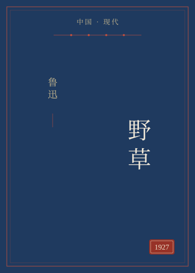

野草
一、基本信息
| 作者 | 鲁迅 |
|---|---|
| 成书/出版 | 1927年7月北京北新书局初版（Britannica：Yecao (Wild Grass, 1927)） Lu Xun — Encyclopaedia Britannica（百科全书） |
| 国别/地区 | 中国 |
| 时代 | 现当代 · 现代 |
| 体裁 | 散文诗集 |
| 语言 | 汉语（白话+文言韵律） |

《野草》核心意象结构图（23篇）（主题·结构图）
二、创作背景
写作期：1924年9月—1926年4月，发表于《语丝》（通说待核）——'新青年'散掉、兄弟失和、三一八惨案（1926年3月）的黑暗期。Britannica 记其为'symbolic prose poems'（象征性散文诗，Britannica Lu Xun 条）。
文体谱系：波德莱尔《巴黎的忧郁》、屠格涅夫《散文诗》（鲁迅自述受其影响——通说待核）与中国古典骈文（通说待核）。
自评：'我的哲学都包含在我的《野草》里'（其致友人语大意，通说待核）——鲁迅思想的核心文本。
三、内容脉络
《题辞》：'当我沉默着的时候，我觉得充实；我将开口，同时感到空虚'（原文，公有领域）——'地火在地下运行'的总体隐喻。
《秋夜》：'在我的后园，可以看见墙外有两株树，一株是枣树，还有一株也是枣树'（原文，公有领域）——怪异的重复打开全书的语言实验；枣树与天空的对峙。
《影的告别》《死火》《这样的战士》：影子'有我所不乐意的在天堂里，我不愿去'（原文意，公有领域）——拒绝一切既有阵营的'中间物'；'这样的战士'举起投枪刺向'无物之阵'（原文意，公有领域）。
《墓碣文》《颓败线的颤动》：'于浩歌狂热之际中寒；于天上看见深渊'（原文，公有领域）——自我解剖到骨髓；老妇人的'颤动'是肉身的控诉。
《淡淡的血痕中》《一觉》：三一八惨案的回应——'真的猛士，敢于直面惨淡的人生'（《记念刘和珍君》语，同属同期——通说待核）。
四、主要人物表
| 人物 | 身份 | 说明 |
|---|---|---|
| '我'与影子 | 叙述者·自我 | '中间物'的自我解剖者 |
| 枣树、死火、过客、战士 | 自我镜像群 | 反抗绝望的诸形态 |
| 过客（同名篇） | 东行者 | '我只得走'——明知前方是坟仍前行（原文意，公有领域） |
五、主题与艺术特点
- 反抗绝望：'绝望之为虚妄，正与希望相同'（《希望》原文，公有领域）——全书哲学纲领。
- 中间物意识：'在明与暗、生与死之间'的影子——既不属于旧也不属于新（通说）。
- 语言的极限实验：象征、悖论、梦的记谱——中国现代散文诗的奠基与顶峰（通说）。
- 自我解剖：'抉心自食，欲知本味'（《墓碣文》原文，公有领域）。
- 艺术特点：梦境叙事框架（《好的故事》《死火》）、意象的凝练、音乐性（通说）。
六、影响与评论
- Britannica（Lu Xun 条目）：Yecao (Wild Grass, 1927) — symbolic prose poems（象征性散文诗）——鲁迅三体（小说/散文诗/杂文）之一体。
Lu Xun — Encyclopaedia Britannica（百科全书） - 对后世散文诗与诗的影响：从穆旦到海子、西川（通说待核）。
Lu Xun — Encyclopaedia Britannica（百科全书） - 思想史地位：'反抗绝望'成为鲁迅研究（汪晖等——通说待核）的核心概念。
Lu Xun — Encyclopaedia Britannica（百科全书） - 英译：Wild Grass（杨宪益戴乃迭译，通说待核）。
Lu Xun — Encyclopaedia Britannica（百科全书）
七、阅读建议
难点
- 象征密度极高——逐篇需注释（如《影的告别》《墓碣文》）。
- 语境（1924—26年政治与私人事件）是理解钥匙。
- 语言实验（重复、悖论）在翻译中必有损失——尽量对照原文。
- 《鲁迅全集》（人民文学出版社2005年版）含《野草》注释：标准。
- 《野草》单行注释本（孙玉石《〈野草〉研究》等，通说待核）。
- 英译：Yang Xianyi & Gladys Yang, Wild Grass（通说待核）。
先读《题辞》《秋夜》《影的告别》《死火》《这样的战士》五篇立骨 → 《墓碣文》《过客》《淡淡的血痕中》→ 通读其余 → 配鲁迅年表（1924—26）与孙玉石研究。
八、待核实
- 初版（1927年7月北新书局）与《题辞》写作时间（1927年4月，通说）待核。
- 各篇《语丝》刊期逐篇待核。
- '哲学都包含在野草里'的原始书信出处待核。
- 《过客》《这样的战士》等的逐字引文核对。
本页主要来源
鲁迅的其他收录作品：呐喊